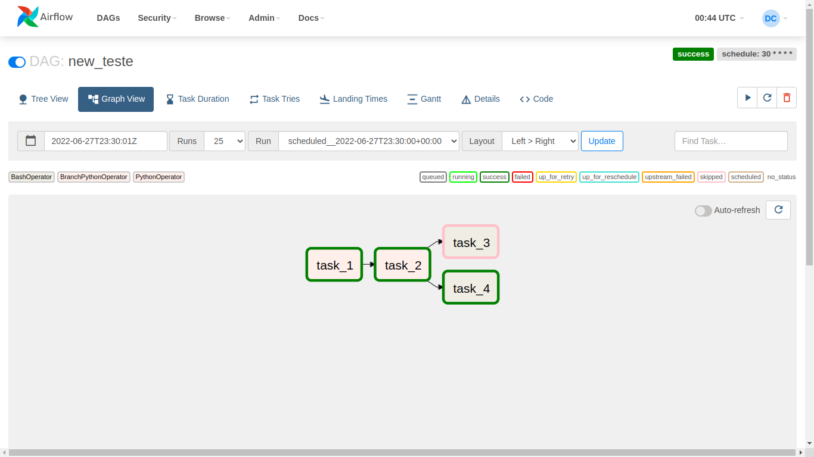

Definindo DAG como solução
Para desenvolvermos a solução, precisamos construir cada uma de nossas Tasks.
Task 1
Claramente, a task 1 irá utilizar um PythonOperator, pois pode ser feita através de uma função Python. Pensando na função, podemos ter algo semelhante a isto.
def captura_conta_dados():
url = "https://api.github.com/users/Daniel-Alencar/repos"
response = requests.get(url)
df = pd.json_normalize(json.loads(response.content))
quantidade = len(df.index)
return quantidade
A API do GitHub nos disponibiliza os repositórios que temos em nossa conta. Assim, definimos a URL que iremos acessar para conseguir estes dados.
Após fazermos o requerimento destes dados, o padronizamos para deixarmos de uma maneira que podemos acessá-lo facilmente e logo em seguida recuperamos o número de repositórios na variável quantidade. Em seguida, retornamos este valor na função.
Observe que devemos fazer as seguintes importações para a função rodar perfeitamente.
import pandas as pd
import requests
import json
Criando a nossa tarefa dentro da DAG, podemos ter algo semelhante a isto:
# Task de execução de scripts python
T1 = PythonOperator(
task_id = 'task_1',
python_callable = captura_conta_dados
)
Task 2
A segunda task também parece ser uma execução python, porém, devemos dar alguma indicação da próxima tarefa que iremos executar após finalizar a task 2 (pois, dependendo do valor, ou a task 3 ou a task 4 será executada).
Logo, devemos utilizar o BranchPythonOperator desta vez. Como iremos analisar o valor retornado da task anterior, teremos algo semelhante a isto.
def isValido(task_instance):
quantidade = task_instance.xcom_pull(task_ids = 'task_1')
# Especifica a próxima task a ser realizada
if (quantidade > 30):
return 'task_3'
return 'task_4'
A execução task_instance.xcom_pull(task_ids = 'task 1') retorna o valor que foi retornado da ‘task_1’, que no caso é a quantidade de repositórios no GitHub.
Tendo esta quantidade, analisamos se ela é maior do que 30.
- Se sim, devemos executar a ‘task_3’, e por isso, retornamos o ID da task 3.
- Se não, devemos executar a ‘task_4’, e por isso, retornamos o ID da task 4.
A Task será definida mais ou menos desta forma (mesma ideia dos parâmetros da task anterior):
# Task de execução de scripts python + Escolha da próxima task a ser realizada
T2 = BranchPythonOperator(
task_id = 'task_2',
python_callable = isValido
)
Task 3 e Task 4
Digamos que eu queira que apareça na tela “Quantidade OK” e “Quantidade não OK” para a task 3 e task 4, respectivamente.
Desta vez, utilizaremos outro tipo de operator, o BashOperator. Pois, queremos que a amostragem se dê por meio de um comando de terminal Bash.
Assim, teríamos algo semelhante a isto para a task 3 e task 4.
# Task de execução de comando no terminal Bash
T3 = BashOperator(
task_id = 'task_3',
bash_command = 'echo "Quantidade OK"'
)
# Task de execução de comando no terminal Bash
T4 = BashOperator(
task_id = 'task_4',
bash_command = 'echo "Quantidade não OK"'
)
Sendo:
- task_id: Identificação da task.
- bash_command: Comando do Bash para ser executado.
Definindo a ordem de execução
- task 1
- task 2
- task 3 ou task 4
No código, podemos especificar isto da seguinte forma:
# Define a ordem de execução das tasks
T1 >> T2 >> [T3, T4]
Finalizando
Organizando tudo teremos algo assim.
from airflow import DAG
from datetime import datetime
from airflow.operators.python import PythonOperator, BranchPythonOperator
from airflow.operators.bash import BashOperator
import pandas as pd
import requests
import json
def captura_conta_dados():
url = "https://api.github.com/users/Daniel-Alencar/repos"
response = requests.get(url)
df = pd.json_normalize(json.loads(response.content))
quantidade = len(df.index)
return quantidade
def isValido(task_instance):
quantidade = task_instance.xcom_pull(task_ids = 'task_1')
# Especifica a próxima task a ser realizada
if (quantidade > 30):
return 'task_3'
return 'task_4'
with DAG('new_teste', start_date = datetime(2022,5,23),
schedule_interval = '30 * * * *', catchup = False) as dag:
# Task de execução de scripts python
T1 = PythonOperator(
task_id = 'task_1',
python_callable = captura_conta_dados
)
# Task de execução de scripts python + Escolha da próxima task a ser realizada
T2 = BranchPythonOperator(
task_id = 'task_2',
python_callable = isValido
)
# Task de execução de comando no terminal Bash
T3 = BashOperator(
task_id = 'task_3',
bash_command = 'echo "Quantidade OK"'
)
# Task de execução de comando no terminal Bash
T4 = BashOperator(
task_id = 'task_4',
bash_command = 'echo "Quantidade não OK"'
)
# Define a ordem de execução das tasks
T1 >> T2 >> [T3, T4]
Execução da DAG criada

Observe que no final temos a execução da task_4. E está correto, pois de fato, não tenho mais de 30 repositórios em meu GitHub.
Analisando o ‘Log’ da task_4, podemos visualizar a mensagem “Quantidade não OK”.

Através deste exemplo, entendemos melhor o processo de criação de DAGs no Airflow.